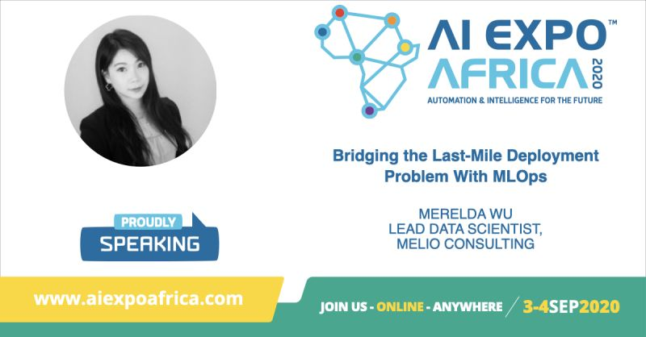

Talks
This section is the talks I did for meet-ups, conferences interviews and others.
[Interview] 2️⃣ 0️⃣ 2️⃣ 0️⃣ - 1️⃣ 0️⃣ -0️⃣ 7️⃣ Brainstorm Magazine
Article Name: Building an AI Ecosystem
I was interviewed as an AI expert to give an opinion on Africa’s ambition to create our own AI forum. It was an honour to be featured in the front page as a spokesperson amongst other leading academic and industry professionals, such as Professor Tshilidzi Marwala (University of Johannesburg) and Mark Walker (Market analyst and VP, IDC Sub-Saharan Africa).
Here are a couple of excerpts:
-
“In order to have a standing in the world’s stage, you have to bring something forward, and to be able to do that, really starts with education. If the general public has a good sense of what AI is, the conversation can move a lot further than just, ‘AI is taking my job’.”
-
Wu believes the opportunity within AI is clear for Africa, but adds that successful application and the ability to leverage the technology will require collaboration and a stringent process in the formulation of policy.
-
She emphasises the need for close collaboration and private sector contribution, and says this sector is already focusing on addressing various AI biases and ensuring transparency in models being produced.
-
“Africa is unique in the way that obviously historically we’ve been more of a laggard, in terms of technology adoption, but it also presents an opportunity because we don’t have a lot of legacy and can very quickly adopt newer technologies without having to switch off current assets, because we don’t really have current assets. We also see a lot of African countries leapfrogging significantly, like Ghana, Kenya and Nigeria, they’re almost beating South Africa to the punch.”
[Conference] 2️⃣ 0️⃣ 2️⃣ 0️⃣ - 0️⃣ 9️⃣ -0️⃣ 4️⃣ AI Expo
Talk Title: Bridging the Last-Mile Deployment Problem with MLOps

I was given the opportunity to share my experience on MLOps at the biggest AI Expo in Africa.
Here’s the intro of the talk:
With AI, most companies choose to start with building small scale PoCs or POVs. Unfortunately, with this approach, many struggled to move from experimentation to scale. This is especially true for enterprise AI teams, where data science, data engineering, cloud, infrastructure, and business functions are all struggling in deep, parallel trenches. Companies who enjoy the greatest ROI starts with building their pathway to scale. If you don’t develop with deployment in mind, you will be stuck in islands of experiments.
I will begin this talk with the common reasons for the non-deployment of machine learning models. This is followed by an introduction to MLOps, and how organisations can benefit from building with the end in mind. Finally, I will discuss the practical steps that teams can follow to lay the foundations for smooth deployment.
[Conference] 2️⃣ 0️⃣ 2️⃣ 0️⃣ - 0️⃣ 8️⃣ - 1️⃣ 2️⃣ GirlCode
I was invited to speak about my experience as a Women in Tech and Women Tech Founder at the GirlCode’s women month event.
[Meet-Up] 2️⃣ 0️⃣ 1️⃣ 9️⃣ - 1️⃣ 0️⃣ - 3️⃣ 0️⃣ Cloud Native Computing Johannesburg
Talk Topic: Build with the end in mind: infrastructure-backed data science with Kubeflow
I gave a talk on Kubeflow at the joint event between Google Cloud User Group & Cloud Native Computing Johannesburg Group.
Talk intro:
As data scientists, we usually prototype use cases and try to find the one that can generate business value with the data on hand. We jump straight to work and at the end of the PoC accidentally wow-ed the stakeholders so much that they want the solution in production tomorrow. We scramble around our Jupyter notebooks and scripts to put together a pipeline that we think is reliable, the infrastructure guy then turns around and says “I can’t use any of this”.
At Melio, we develop with deployment in mind with Kubeflow. From the beginning, infrastructure sits with data science to gather the requirements for production. We set up the Kubeflow pipeline to allow our experiments to run exactly as how it will be run in production. From the data scientist’s perspective, it’s the same as writing notebooks; from the infrastructure, it’s the same as setting up Kubernetes.
In this talk, we will be presenting our data science workflow with Kubeflow both from the operation’s and data scientist’s standpoints. We will also demonstrate how we have incorporated Kubeflow into our profile image analyser pipeline.
[Meet-Up] 2️⃣ 0️⃣ 1️⃣ 9️⃣ - 0️⃣ 6️⃣ - 2️⃣ 5️⃣ R-Ladies Johannesburg
Talk Topic: How to talk to business as a data scientist
Talk intro:
Data science projects can go wrong in a million ways. To get it done well, you need to manage the expectations from day 0. How do you do this?
This talk by Merelda Wu distills the art form of “talking to business” to a list of non-scientific formulas that can be applied in your everyday life. If any of the following resonates with you, join us:
- The magic wand problem? Data doesn’t just give you “actionable insight”, you need to ask the right question.
- Misaligned expectations? The classic case of what you say you want, is not what you really, really want.
- The scope creep problem? Sure, of course I can re-write everything and give it to you five minutes ago.
- The big data problem? No darling, you don’t have big data if it fits in Excel.
- The confidence challenge? No, there’s no such thing as 100% accurate, also we use this thing called the F1 score.
- The cloud challenge? Yes cloud would be great, but your data’s gotta be there first though.
This talk shares some common problems faced in most data science projects. Some heart-aching stories will be shared, as well as some great tools and tips that will help you speak to your business logically, with tons of visual aid and zero mathematical equations.